Trackbag is a mobile app that helps users to track their luggage in the whole airline journey from arrival to departure.
-
Practice work
-
Research, competitive analysis, sketching, visual design
-
Mobile application
Project overview
Airports and luggage, we all know that they have a sour relationship. Accidental pick-ups, ripped off tags, delays, mishandling by the airlines or worse theft. It's so common these days that there is an insurance industry around this.
I decided to take up this redesign project and explore the solutions.
design question
A traveler has landed at New Delhi airport and needs to find her checked bag.
Pre-research
I mapped out an end-to end user journey of a typical user to visualize areas where pain-points might arise (highlighted in red).
The major problems and needs are listed as follows:
- Users end up spending too much time in the conveyor belt, especially in things such as standing in checkout lines and finding their baggage.
- Users don't know the whereabouts of their luggage
- Increase in the theft cases of luggage
- Luggage going to unknown locations
- How can a user find the directions for his/her luggage? (From deboarding to conveyor belt)
Research
To understand the problem scope more clearly, I started with getting familiar with the current process.
Current baggage Process:
- The operator registers luggage with the passenger name, finds the whole travel itinerary, and prints one or more tags to attach to each suitcase.
- The tag is a label that includes all the information related to the flight, also the final destination, and any other foreseen stopover, together with a 10-digit barcode, unique for each suitcase.
- With the information, the sorting function exactly knows its final destination and its itinerary, and our baggage can be automatically sent to almost all final destinations.
- At arrival, the suitcases are unloaded from the airplane, and with the help of tags the right delivery path is assigned to them.
Research Insights
The current system of barcode scanning does not provide the user to track every whereabouts of their baggage.
Problems with barcode scanning:
- Theft at baggage claim (anybody can pick any bag)
- Manual scanning required of each item
- Only one item can be scanned at a time.
- Wear and tear of label effect the scanning ability.
- No tracking of baggage (when it will arrive at the conveyor belt).
- No check at exit, whether the users have his own luggage or not
- 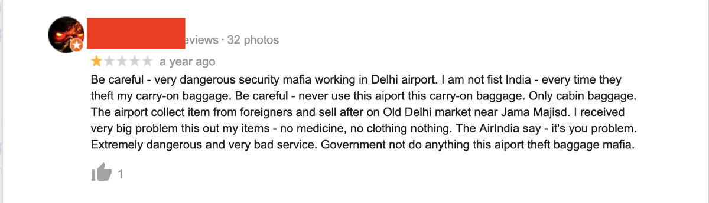
- 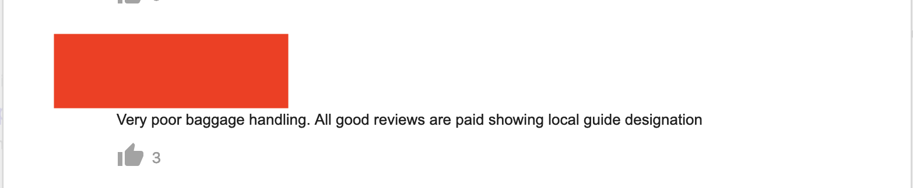
Business impact
- Of all mishandled bags, 81% are simply delayed
- The cost to airlines to find, deliver or replace mishandled bags was $2.09 billion in 2013.
- The top cause for delayed bags was when baggage handlers made errors transferring bags from one airplane to another. This accounts for 45% of mishandled bags.
- Up-to 2019, 25.4 million bags were mishandled
- Huge time and resource wastage
- Reputation damage
- Unhappy customers
A Solution
RFID
RFID technology is expected to further improve the no-read tag rate in the future. RFID tags can be embedded in bag tags and track luggage in real-time. With RFID readers reading tags via radio waves, hidden or unreadable tags do not present a problem, leading to fewer mishandled bags.
Using the tech, the IATA proposed a method to tackle this issue.
Resolution 753
According to Resolution 753 in effect from June 2018, airlines must track baggage at four key points in the baggage journey as follows:
- Passenger handover to airline
- Loading to the aircraft
- Deliver to the transfer area
- Return to the passenger
And airlines need to share the tracking information with their interline journey partners as needed.
The best way to exchange this information with the traveler is with the help of a mobile phone.
-
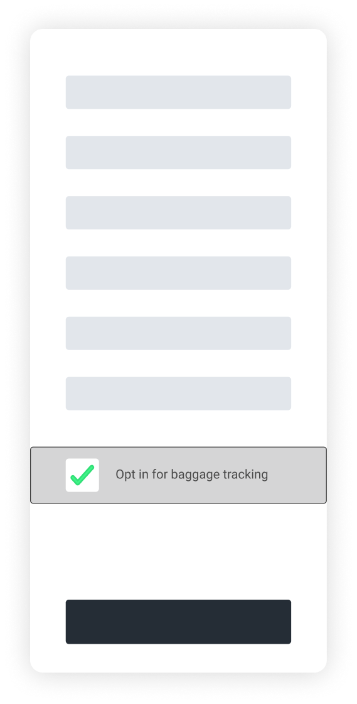
The user already have an airline booking app/3rd party app, which could be used to complete this flow of information.
-
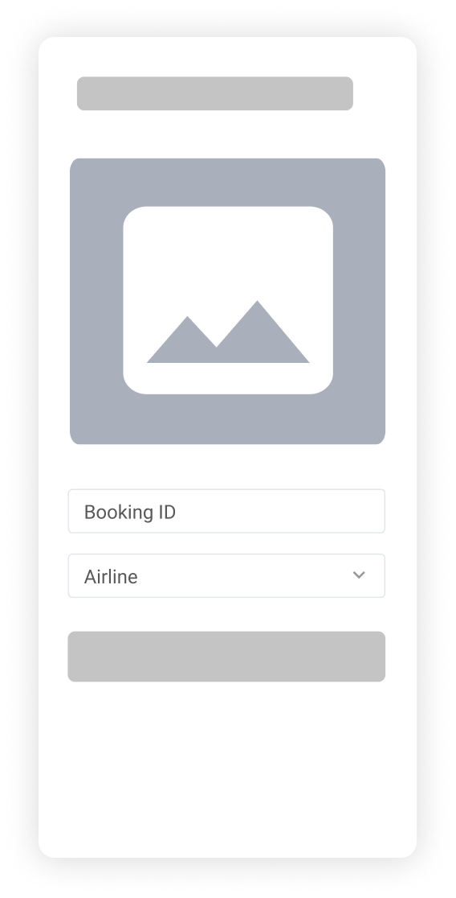
This could be a Standalone App that takes your booking ID, the airline with which you booked your ticket and spit out your baggage tracking details.
The notifications could be well integrated with messaging apps like WhatsApp to push regular updates about the tracking details of the baggage as most of the users use them.
Wireframes/Sketches
- 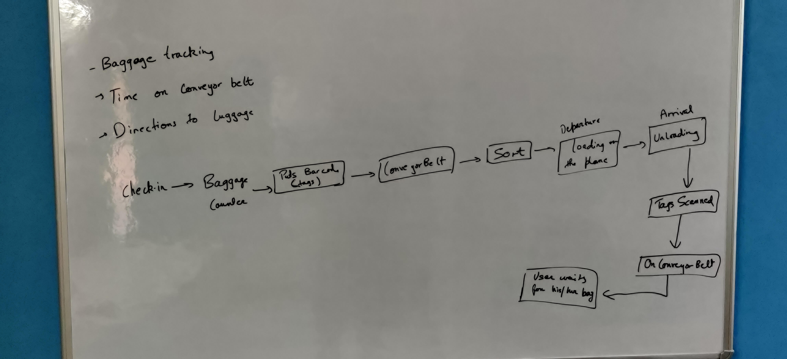
- 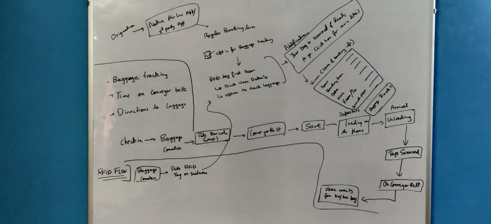

- 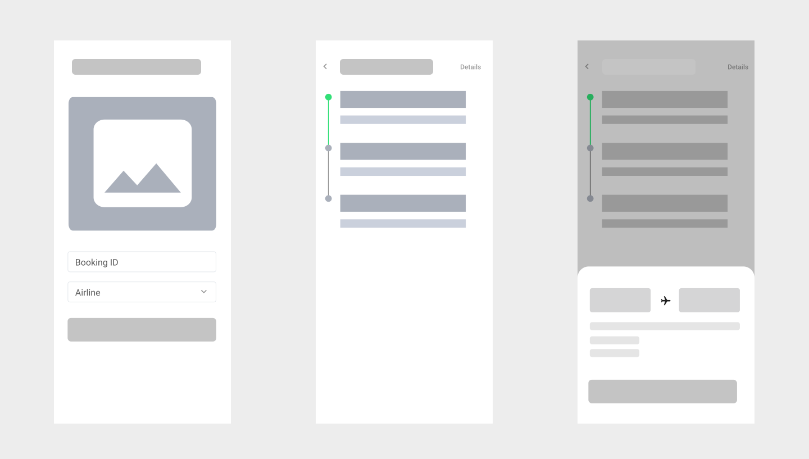
- 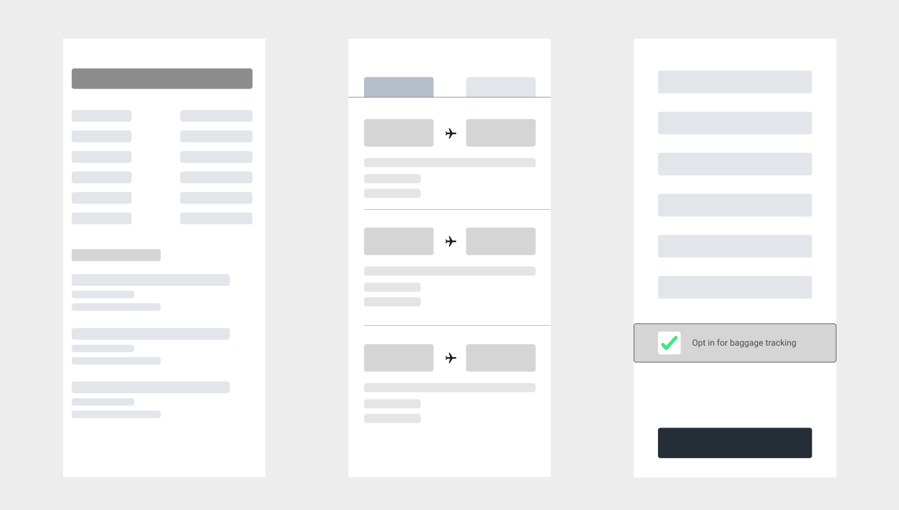
Visuals
-
A step by step carousel like listing informing the user that how the product will help you to track your luggage with easy sign in/sign-up options.
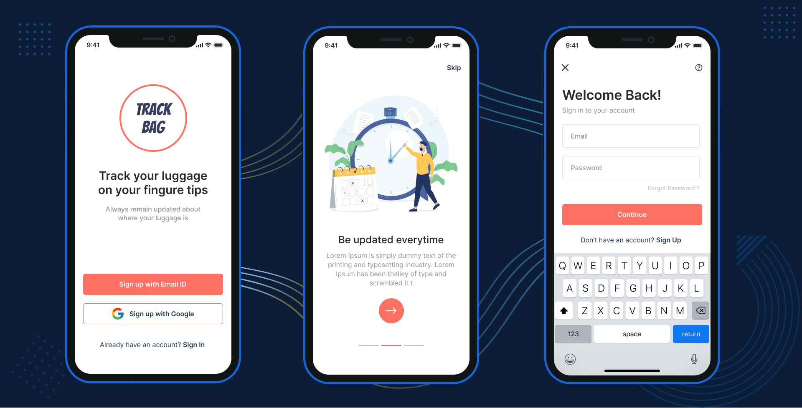 -
By using the user's booking ID, tracking information is generated and each and every step is highlighted on the journey.
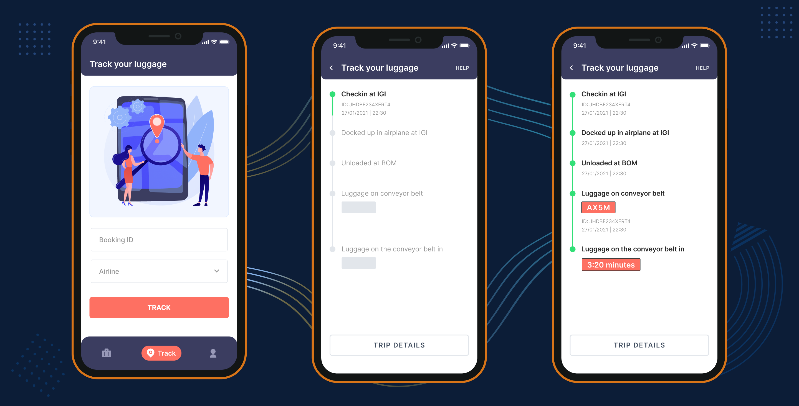 -
The help section would let the user know where to find help with queries and emergency situations related to your luggage.
Trip details popup will let the user know the information related to his/her flight.
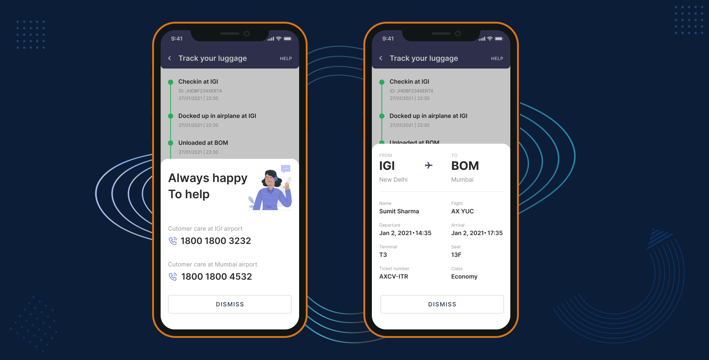 -
This view displays the current trip with archived trips. The user can toggle between the two and finds the information that he/she finds useful.
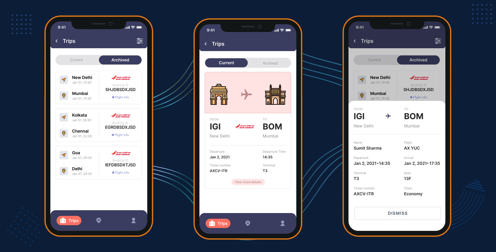
KPI's
KPIs, are key figures that you can choose or define yourself which translate the success of a project
To make a product successful, it has to be measured in the right way. After all User experience is all about finding that soft spot between the ease of use and business.
The product would be measured on the basis of these Key Indicators-
Reflection
Think big, but start small and focused, and expand the use cases based on the track. It will enable more efficient project management as well as more scalable design solutions. The initiation for this project is to explore design opportunities for an effective digital luggage tracking product, but this intended scope is obviously too big to be executable and would require involvement of multiple parties.
Sure, it's a huge investment from the business side of both the airline and the airport infra's owners but in the long run, this will pay off in huge amounts as in :
- The mishandling of bags would reduce
- The cost of mishandling the bags would reduce
- The flight delays because of mishandling would go down
- Time and resource wastage would be reduced
It's a win-win for both the sides.